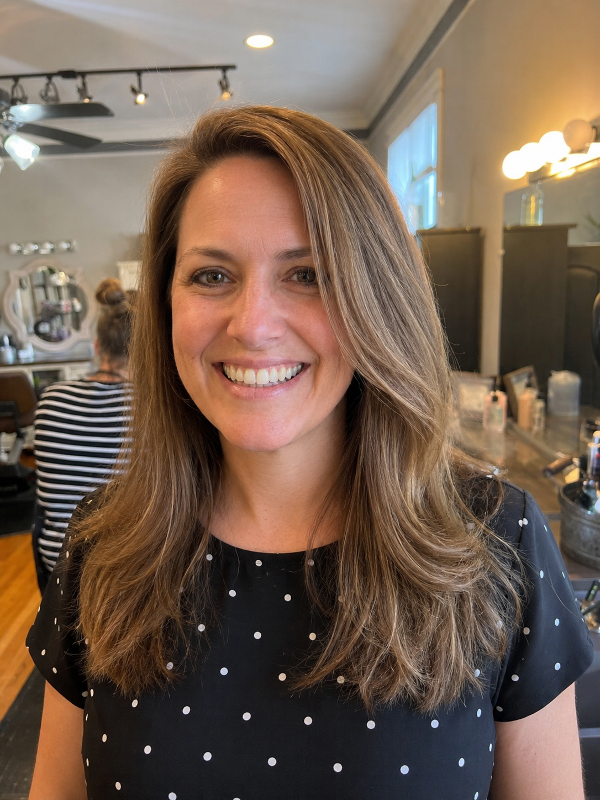
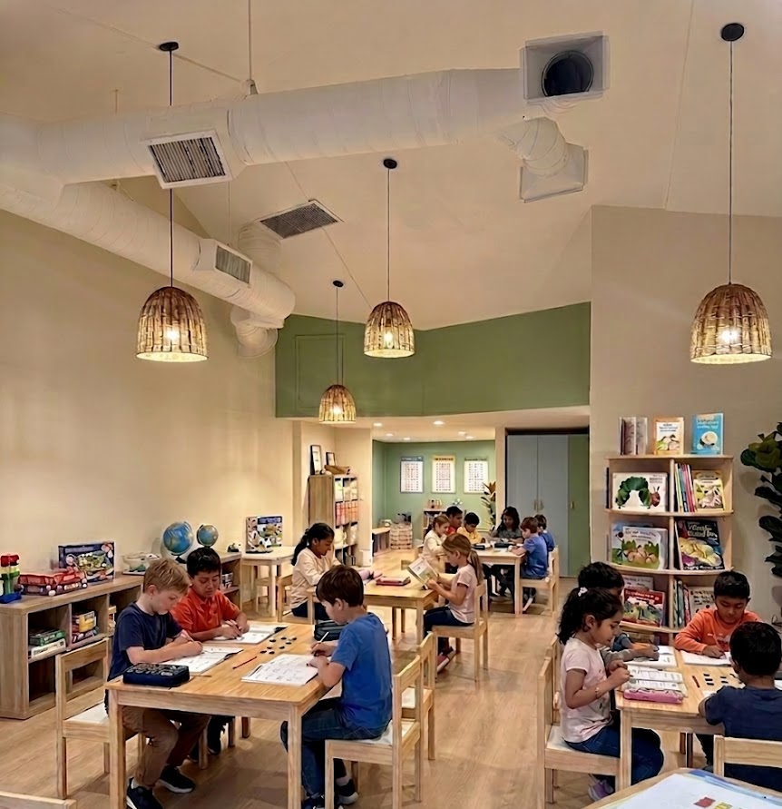
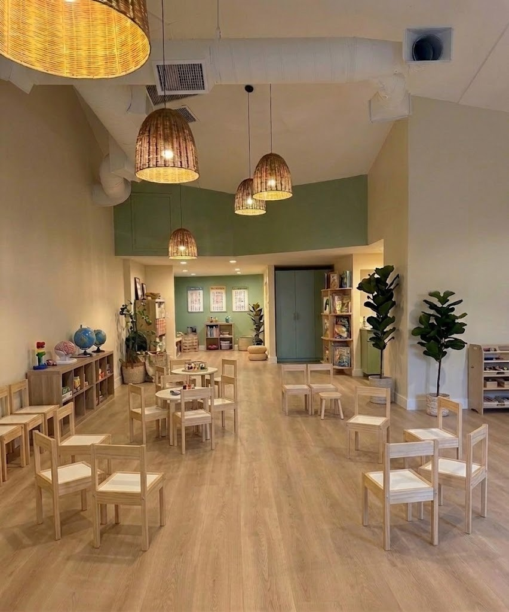
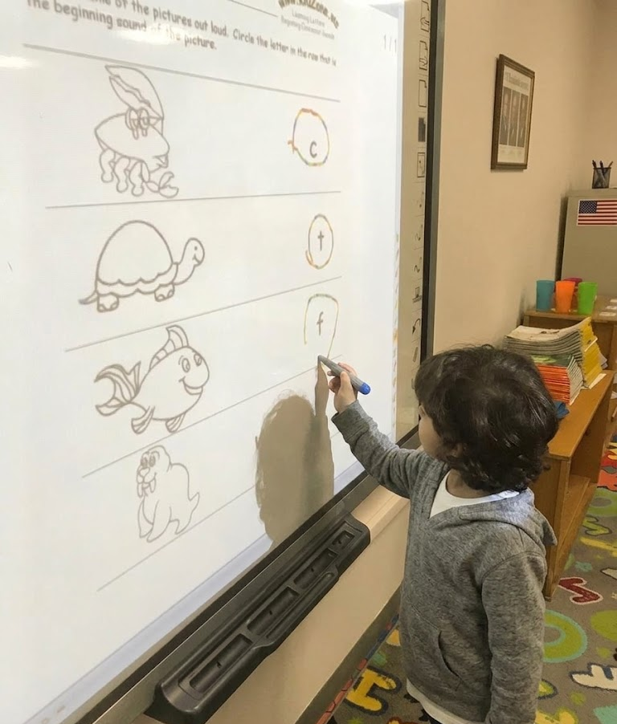
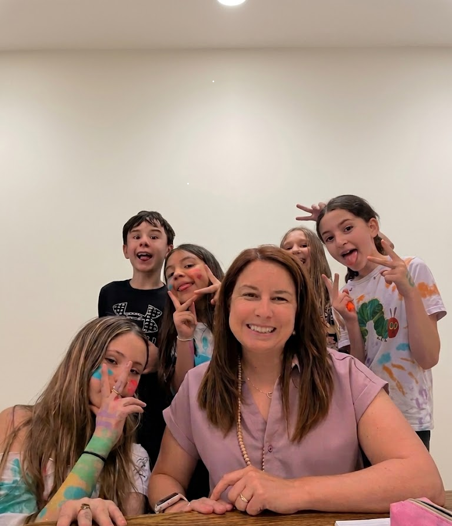
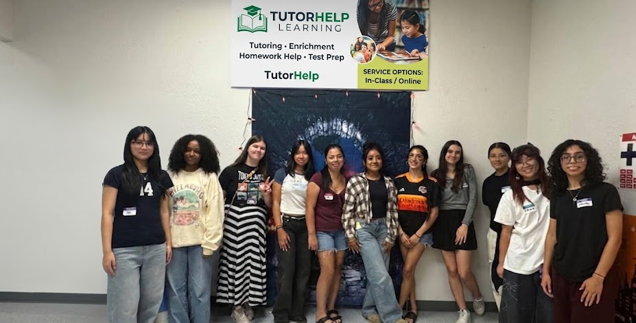
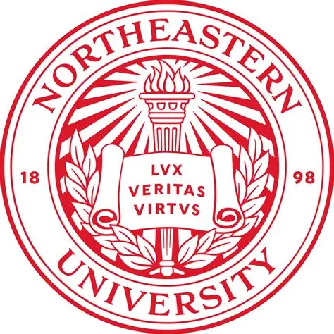
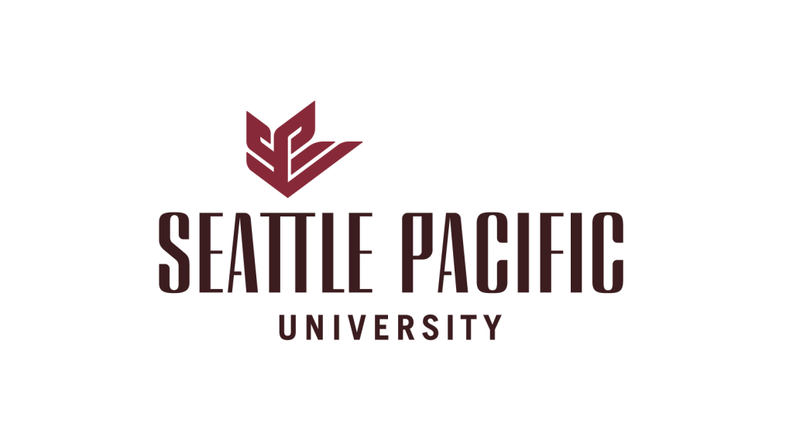

A Local Academy With a Growing Virtual Community
BrightPath Learning was started back as IEDU in Klamath Falls and is currently based in Klamath Falls, Oregon. We work with families in Klamath Falls and nearby communities and schools. In recent years we have acquired clients who prefer virtual tutoring from all over the USA.

Sarah Elijah
Founder, BrightPath Learning
Sarah Elijah founded BrightPath Learning (initially IEDU Tutoring and Admission Consulting) with a simple idea: children learn better when they have someone who can give them individual attention, explain things in a way they understand and stay involved in their academic progress.
Her vision for BrightPath Learning is to create a tutoring experience that goes beyond completing another lesson. She wanted students to have consistent support, regular feedback and a learning environment where they feel comfortable asking questions and working through difficult concepts.
Our approach
- Individual attention
- Clear explanations
- Consistent support
- Regular feedback
- Academic progress tracking
Built Around the Student
Our students come from a variety of school backgrounds, and our tutoring is built around what each student is currently learning. Whether a child needs help with a particular subject, homework support or consistent academic help throughout the school year, we work around their individual needs.





Experienced and Carefully Screened
Many of our tutors have completed their post graduation from the universities shown here.
We take time to screen and interview our tutors before they begin working with students. We look at their subject knowledge, teaching ability, communication and how well they can adapt their approach to different students.
Our tutors have at least 5 years of tutoring experience. We also take the student's academic needs into account when pairing them with a tutor.

